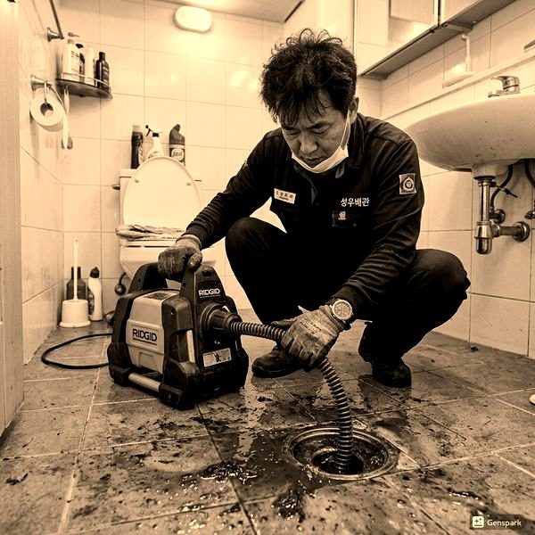
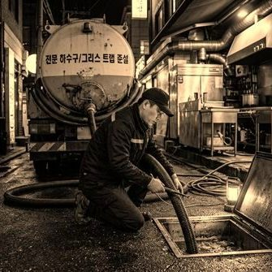
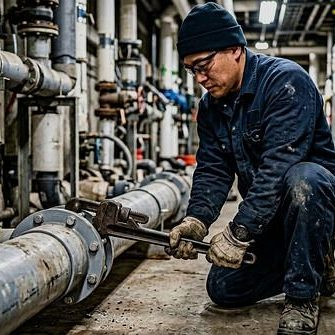

세탁기 배수관 막힘 원인과 해결법
2026년 4월 12일 | 제우스시설관리
세탁기가 배수하지 못하면 세탁이 중단되고 물이 넘칠 수 있습니다. 세탁기 배수 문제는 세탁기 자체의 고장일 수도 있지만, 대부분 배수관 막힘이 원인입니다. 정확한 원인 파악이 해결의 첫걸음입니다.

세탁기 배수관이 막히는 주요 원인은 세탁 보풀(린트)입니다. 세탁 과정에서 발생하는 미세한 섬유 조각이 배수관 내벽에 달라붙어 점차 축적됩니다. 여기에 세제 찌꺼기가 섞이면 딱딱하게 굳어 배수를 방해합니다.
두 번째 원인은 배수 호스 꺾임입니다. 세탁기를 벽에 너무 가까이 밀어넣으면 배수 호스가 꺾여 물이 빠지지 않습니다. 세탁기와 벽 사이에 최소 10cm 간격을 유지하세요. 배수 호스의 높이도 중요합니다. 호스가 세탁기보다 높으면 배수 불량이 발생합니다.

자가 점검으로 해결되지 않으면 배관 자체의 문제입니다. 세탁기 배수관은 일반 배수관보다 가늘어(보통 30~40mm) 더 쉽게 막힙니다. 제우스시설관리는 전문 드레인 기계로 좁은 배관의 막힘을 제거하고, 고압세척기로 배관 내벽을 깨끗하게 세척합니다.

예방을 위해 세탁 전 주머니를 확인하여 이물질을 제거하고, 보풀 필터를 매월 청소하세요. 분기별 1회 빈 통에 과탄산소다 200g을 넣고 60도 이상에서 공회전하면 배수관 세척 효과가 있습니다. 문제 발생 시: 28분 내 출동, 전화: 010-4406-1788